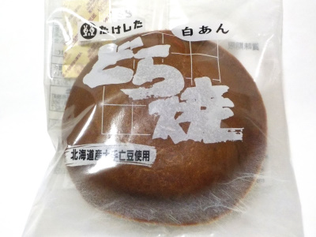

たけしたの白あんどら焼。
2024/02/08

白あんのどら焼きです。豆は北海道産の大手亡豆です。
当たり前ですがアンコが違うので、普段食べてるどら焼きとは違いますね。
豆の粒も入っているので、白インゲンの甘納豆を食べている感じがしました。
これはこれでマイルドな感じでいいかな。
山口県熊毛郡田布施町大字上田布施1966
2024/02/08

白あんのどら焼きです。豆は北海道産の大手亡豆です。
当たり前ですがアンコが違うので、普段食べてるどら焼きとは違いますね。
豆の粒も入っているので、白インゲンの甘納豆を食べている感じがしました。
これはこれでマイルドな感じでいいかな。